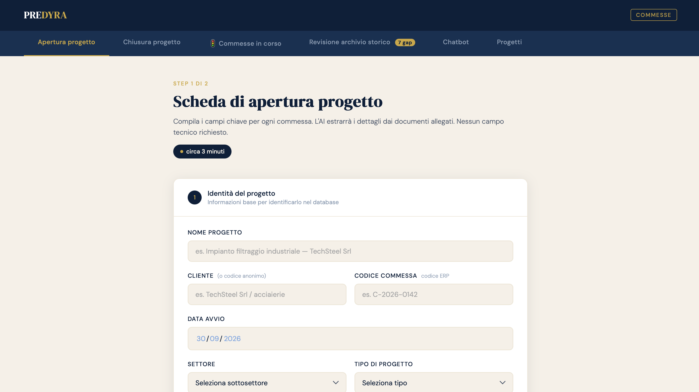
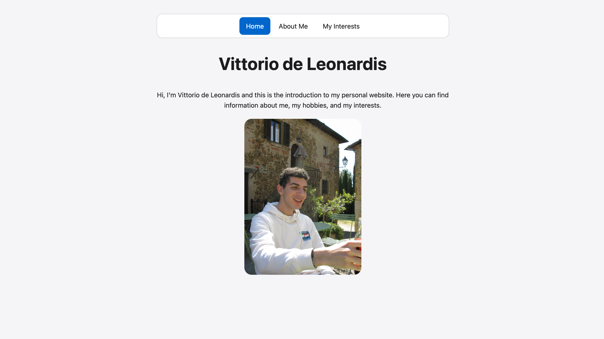
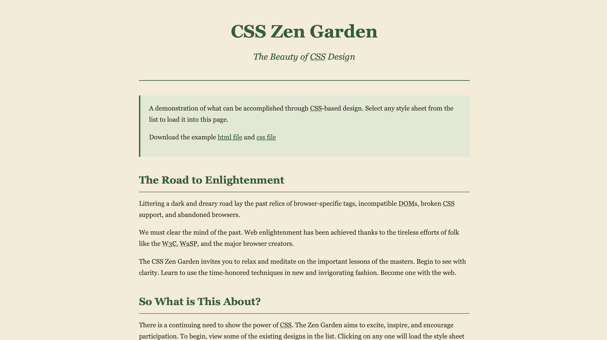
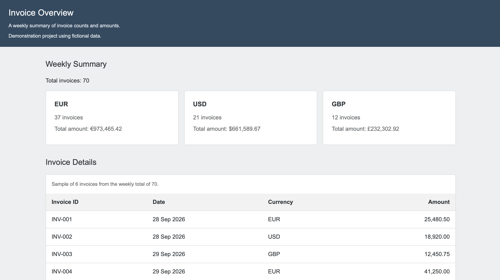
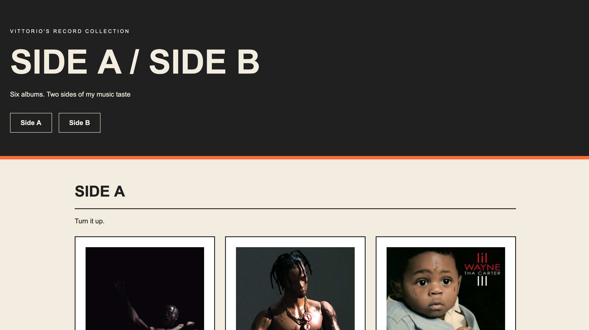

A selection of my university projects and web development exercises.

PREDYRA
A university group project exploring an AI-based platform to help
project managers in manufacturing companies anticipate delays and
budget overruns. The interface prototype uses simulated data to
demonstrate the proposed features.
My contribution:
Financial planning, budgeting, pricing, funding strategy and company
structure. I also created the HTML for the demo with support from
software engineering colleagues in Italy.
Demo technologies:
HTML, CSS and JavaScript.
The attached report is written in Italian, as it was prepared for a
university course in Italy.
View interface demo
Read the project report (PDF, in Italian)

Personal Website
My first personal website, created during the WEB1 course. It
includes a home page, an introduction about me and a page dedicated
to my interests.
Technologies:
HTML and CSS.
View project

CSS Zen Garden
A redesign of the CSS Zen Garden page using a custom stylesheet. I
changed the colours, typography and spacing while keeping the
original HTML structure.
Technologies:
HTML and CSS.
View project

Invoice Overview
A static dashboard inspired by my internship in Finance and Control.
It displays weekly invoice counts and amounts grouped by currency,
together with a sample of invoice records. All data is fictional.
The design is inspired by SAP Fiori, with summary cards and a table
that can scroll horizontally on smaller screens.
Technologies: HTML and CSS.
View project

Side A / Side B
A personal music collection featuring six albums organised into two
sections. Each album includes my favourite track and a Spotify code
that visitors can click or scan with the Spotify app.
The layout adapts to different screen sizes using CSS Grid, Flexbox
and media queries.
Technologies: HTML and CSS.
View project